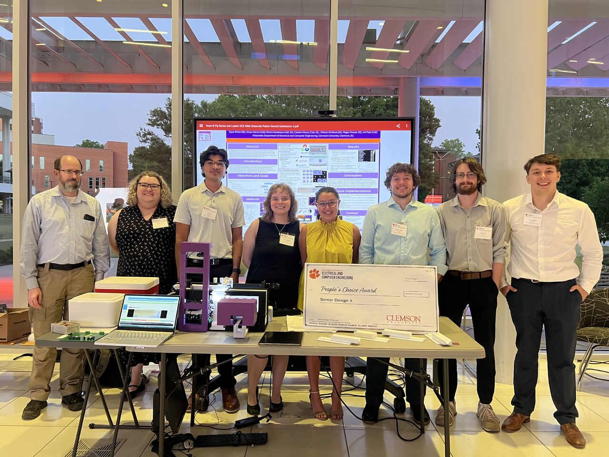

Project
Award-Winning: Automated Drosophila Sorting System

This system was developed for the Clemson University Institute for Human Genetics as a replacement for manual Drosophila sorting. At a high level, it combines AI-based classification, custom electronics, motion hardware, and Raspberry Pi control to automate identification, sorting, and data collection.
The machine uses a trained model to classify sex and detect visible damage such as missing wings or legs, while the hardware handles physical sorting and logs performance analytics. The project was presented at Clemson's Senior Design II Showcase on April 23, 2026 in the Watt Innovation Center, where it received the People's Choice Award. Feedback emphasized the system's technical depth, usability, and overall execution.
Due to project confidentiality, this page remains at a systems level. It focuses on the overall architecture and my engineering contributions without exposing restricted implementation details.
Public-facing components of the system included a custom YOLO-based model, a dataset of 2,000+ labeled images, 3D-modeled mechanical components, vacuum nozzle design, electrical wiring and schematics, and full system integration. My primary role was in integration, ensuring that hardware, software, and user interaction worked together reliably as a complete system.

Drosophila team standing in front of the project poster with John Poole at the Senior Design II Showcase
My Contributions
I worked across the system layers that connect physical hardware, embedded control, and user-facing software.
- Hardware / PCB: Designed and supported a 2-layer PCB, including fabrication preparation, soldering, and board-level assembly. Contributed to integrating power distribution, motor control, and peripheral connections into the full system.
- Raspberry Pi / Embedded Setup: Configured Raspberry Pi OS, implemented boot scripts and startup automation, and developed backup and recovery procedures for consistent system deployment.
- Networking / Remote Control: Helped implement remote control through a FastAPI-based backend, including protected endpoints and API-key access, enabling communication between a host system and the Raspberry Pi controller.
- Motor Control / Actuation: Integrated DC and stepper motor systems, linking software commands to physical motion and supporting control logic for consistent and coordinated operation.
- Cross-Platform GUI: Contributed to a GUI designed for Windows, macOS, and Linux, connecting it to backend control systems and status feedback while maintaining usability for non-technical operators.
- Software Scale / Collaboration: Contributed to a 73,000+ line shared codebase with Avi Patel and Dylan Britch, using Git for version control, collaboration, and change tracking.
Project Credits
Mechanical Systems
3D Modeling / Printing: Rivers Henderson, Dylan Britch, Ainara Garcia
Vacuum Nozzle Development: Rivers Henderson, Dylan Britch, William McGlone, Megan McNuer, Ainara Garcia
Embedded and Control Systems
Motor Control: William McGlone, Camren J. Khoury, Megan McNuer, Dylan Britch
Raspberry Pi and GPIO Control: Camren J. Khoury
Systems Integration
Integration: Camren J. Khoury, William McGlone
Electrical Systems
PCB Design: Camren J. Khoury
Wiring and Schematics: William McGlone, Camren J. Khoury, Megan McNuer
Software and Computational Systems
Computer Vision Implementation (Channel + Assay): Avi Patel
Classification Machine Learning Model (Development + Database): Avi Patel, Dylan Britch, Ainara Garcia
Networking, Automation, and Security: Camren J. Khoury
GUI: Camren J. Khoury, Avi Patel
Project Management and Operations
Logistics: Megan McNuer, William McGlone
Student Project Manager: Ainara Garcia
Academic and Institutional Associations
Clemson University Institute for Human Genetics
Dr. John Poole
Dr. Anurag Chaturvedi
Holcombe Department of Electrical and Computer Engineering
Dr. Hassan Raza